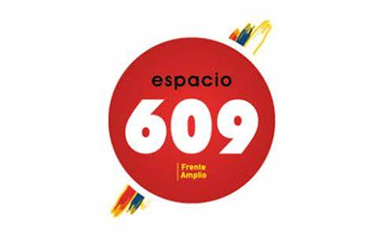

BIOGRAFIA
Victor Hugo Caraballo Curbelo, nacido en Florida el 14 de julio de 1961. Se incorporo al MPP el 25 de agosto del 2011 como militante en el comite de base Enrique Erro de la ciudad de Rodriguez. En el periodo 2015 - 2020 fue delegado (S.) de base para la mesa politica, en la actualidad 2020 - 2025 ocupa el cargo de Edil (suplente) y Primer suplente de la presidenta de la junta electoral Departamental de la lista 609 del MPP.Cargo que renuncio para pasar a la junta Departamental de San José

25 / 08 / 2011

PROPOSITO DE LA PAGINA
PROPOSITO
El propósito de esta pagina es crear una forma de comunicarnos con los vecinxs de esta localidad Ciudad de Rodríguez y adyacencias, para interactuar con los compañerxs del Legislativo Nacional (cámara de Diputados y Senado) Legislativo y Ejecutivo Departamental por su intermedio (Junta Departamental) con los compañerxs Ediles de nuestra fuerza Política, para recibir inquietudes y necesidades de nuestros vecinxs y acompañarlos en el pedido de solución acorde a sus necesidades y propuestas, siendo la forma de comunicarnos en la parte inferior de la presente página.
COPERATIVA COVITRAVI
La cooperativa co.vi.tra.vi. p.v.s. de la ciudad Rodríguez qué es un proyecto de vivienda sindical desde hace 10 años que se inició y aún no se ha logrado continuar con la misma, pero hubo un cambio, de comisión y está logró reunirse vía zoom con la señora intendenta de San José contadora Sra. Ana Bentaverry, acompañada por su equipo, de la cual surge una muy buena disposición de dicha jerarca para continuar con la compra del terreno qué ya dio la orden que se realice en el correr del presente mes cosa qué dejó muy conformes, a la nueva comisión por lo cual la vacante de 11 cupos de un total de 45 viviendas sin dudas se va a poder completar, nuestro equipo, agradece dicha disposición y va a continuar el trámite a la espera que llegue a la junta departamental por ahora es cuánto hay para informar,seguimos en contacto, gracias
CONTACTO
Porque es Importante Comunicarte con Victor
Es importante mantener una buena comunición con vecinxs, para ayudarnos a llevar un control, para aportar ideas, proyectos al segundo y tercer nivel de Gobierno Nacional, la Intendencia de San José y Alacaldía de Ciudad de Rodríguez. Siendo de esta manera una oposición responsable, como debe ser. Es importante presentar alguna foto o video de alguna situación, que se valla a pedir como forma de ilustrar el lugar, facilitando la tarea de documentar para hacer el seguimiento,muchas gracias.